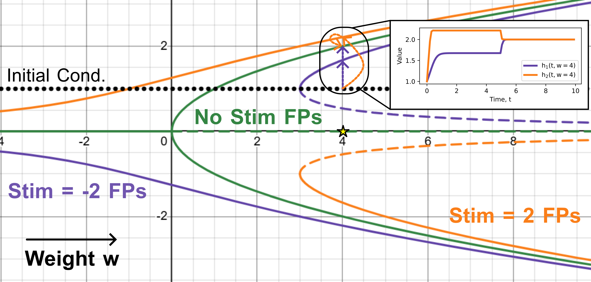
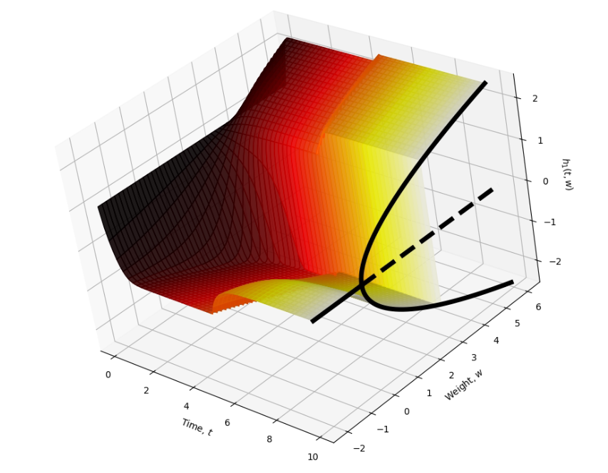
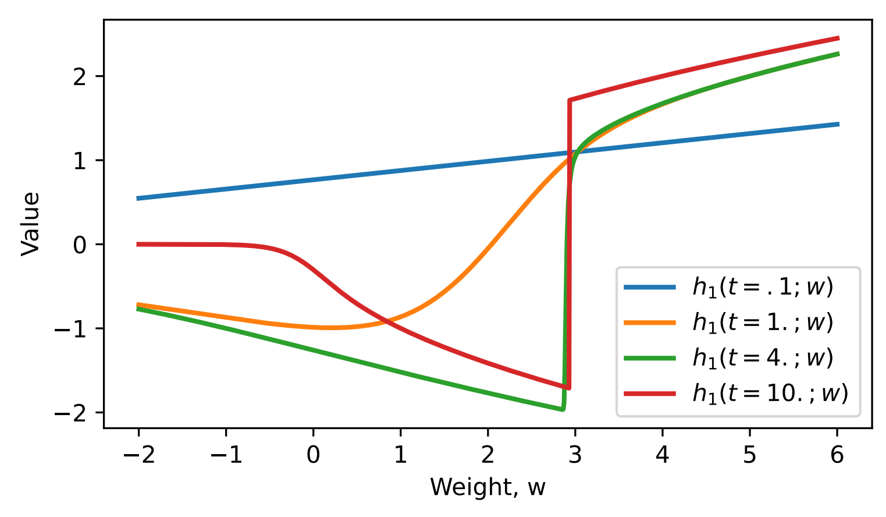

Downstream Ripples of Dynamical Bifurcations Detected by the NTK and Consequences for GD Learning
| Relevant Links | |
| Previous Blog | Pip Pytorch Package |
TLDR
Q: Bifurcations of a dynamical system are necessary for learning many tasks. Learning locally coincides with a linear NTK operator (as in my prior work). 1. How do bifurcations affect this operator? 2. Does it even work since it assumes linearity? 3. Why do bifurcations seem to coincide with plateaus in learning?
A: 1. They can create small singular directions. 2. Yes, but it requires a lot of careful thought. 3. NTK and Fischer information connections: small singular values of operator coincide with bad Hessian eigenvalues.
\( \def\tr{{\text{tr}}} \def\G{{\mathcal{G}}} \def\K{{\mathcal{K}}} \def\P{{\mathcal{P}}} \def\Q{{\mathcal{Q}}} \def\d{{\text{d}}} \def\R{{\mathbb{R}}} \def\E{{\mathbb{E}}} \def\Err{{\text{Err}}} \def\Res{{\text{Res}}} \def\diag{{\text{diag}}} \def\back{{\leftarrow}} \def\j{{\mathfrak{j}}} \def\V{{\mathcal{V}}} \def\pt{{\mathcal{D}_t}} \def\Cov{{\text{Cov}}} \def\effrank{{\text{effrank}}} \def\bias{{\text{bias}}} \def\NTK{{\text{NTK}_{\text{cs}}}} \)
A Parameterized, Non-Autonomous Pitchfork Example
Before any real math, let's work through a motivating example. Let's consider training a dynamical system to exactly respond with a stimulus it is provided, after a memory period. In particular, let's assume the input, \(x(t)\) has the space-time separable form $$x_j(t) = s_j \cdot \delta_{[0,T_{stim}]}(t), \quad \text{ for all } t \in [0, T]$$ so the input is equal to some scalar \(s_j \in \R\) for \(t \leq T_{stim}\) and zero otherwise. Let's just consider two possible stimuli, \(s_1 = -2, s_2 = +2\). The goal of the task is to have the model respond with \(|s_j|\) on input \(x_j\) at time \(T\). Specifically, assume the model is a one-dimensional parameterized dynamical system, \(h_j(t) \in \R\), for each input \(x_j\), \(j = 1, 2\), and the loss is just $$L = \frac{1}{4}(\|h_1(T) - 2\|^2 + \|h_2(T) - 2\|)$$ Now, to solve this task, it's clear that something with two fixed points will suffice. Also, note that \(1\) and \(-1\) are symmetric around \(0\). From this, if you've taken dynamical systems, you might think to use a simple parameterized model of a pitchfork bifurcation. Specifically, consider the ODE model $$\dot h_j(t;w) = w h_j(t) - h_j(t)^3 + x_j(t), \quad h_j(0) := 1.1$$ This is the prototypical model of a pitchfork bifurcation when we set the input to zero, producing a Fixed Point (FP) bifurcation plot like the green curve below. With the input set constantly equal to \(-2\) or \(2\) we get the purple and orange curves, respectively.
{kind=link}

Fig 1 An illustration of the fixed points of the model dynamics for the two stimuli. When the model is evaluated for a particular \(w\), it moves to one of the two stimuli's fixed point curves (based on the stimulus given). Then, when the stimulus turns off after \(T_{stim}\) time, it moves to the nearest fixed point along the green curve. We see that setting \(w=4\) makes the output equal \(2\) in both cases.
Now, we see from this plot that the optimum is achieved at \(w = 4\). So, imagine if we set \(w = -2\) (or something bigger and negative) and trained the model with GD to reach \(w = 4\). We can look at how the trajectories vary with \(w\) as they pass through the bifurcations for the different stimulus conditions, producing a 3D surface as below.
{kind=link}

Fig 2 Trajectory \(h_1(t, w)\) s a surface versus \(w\) and time \(t\). Color goes from black to white based on time. Black lines are the asymptotic FPs in green in the previous plot.
Note that for large \(t\) there is a dramatic cavernous jump in values as \(w\) passes through \(3\). At this point, linearization certainly does not apply asymptotically: at time \(t = \infty\), the FP has a discontinous jump. But we're not predicting the evolution of the infinite time values of \(h_1(t, w)\), we're predicting for finite times, which may not have the same problem. In the extreme case, the initial condition (i.e. at time \(t = 0\)), the state is completely fixed at \(h_1(0, w) \equiv 1.1\), so this doesn't get affected by the bifurcation. Indeed, at times close to \(0\), the bifurcation is barely felt as a faint ripple of the true discontinuous jump that is present at the infinite time limit (Figure below). Basically, the closer we get to the fixed point, the closer the derivatives get to zero, indicating a need for second-order or higher approximations.
{kind=link}

Fig 3 Evolution of \(h_1(t; w)\) in \(w\) for fixed \(t\). Note that, especially for early times, the bifurcation is not felt: it is very far from being discontinuous around \(w = 3\) at these times. Note here that \(T_{stim} = 5, T = 10\).
Finally Some Math
Let's try to explain these things more formally, which will segway into the general NTK operator theory, after the example is worked out a bit more. Firstly, when people work with bifurcations, they typically study the effect of weights on asymptotic fixed point dynamics. Specifically, consider the map $$\pi_\infty : w \mapsto \lim_{t \rightarrow \infty} h_j(t; w)$$ Here, \(\pi_\infty : \R \rightarrow \R\). Outside of bifurcations, the derivative \(\d \pi_\infty / \d w\) describes how fixed points move around after small changes in the weights. When a bifurcation happens, this Jacobian becomes singular (\(\d \pi_\infty / \d w = 0\)) and we need second-order derivatives or higher to explain the new fixed points that emerge after small perturbations.
However, in reality we never actually reach the asympotitic dynamics, so \(s_\infty\) is not the correct object to use to predict how the trajectories evolve. Instead, consider the mapping $$\pi_t : w \mapsto h_j(t; w)$$ Let \(\Phi(s, 0) := \d h_j(s; w) / \d h_0\) be the state-transition matrix (a scalar in this case) from time \(0\) to time \(s\). A change \(\delta w\) at time \(s\) produces a tangential kick that looks like \(h_j(s)\). So, as in my main KP flow stuff, this results in $$\frac{\d \pi_t}{\d w} = \int_0^t \Phi(s, 0) h_j(s) \d s$$ So, under a change, \(\delta w\), up to linearization, we get a change at time \(t\) given by $$\delta h_j(t; w) =\delta w \int_0^t \Phi(s, 0) h_j(s) \d s$$ Now, let's say that \(\Phi(s, 0) = o(e^{-s})\), informally, basically that is looks like an exponential decay (as for a stable fixed point). Then, we see $$\frac{\d \pi_t}{\d w} = \frac{\d \pi_\infty}{\d w} - \int_t^\infty \Phi(s, 0) h_j(s) \d s$$ Loosely (this may not be formally true in all cases, but this is an intuition example), this looks like $$\frac{\d \pi_t}{\d w} = \frac{\d \pi_\infty}{\d w} + o(e^{-t})$$ If we're at a bifurcation, then, we have $$\frac{\d \pi_t}{\d w} = o(e^{-t}),$$ i.e., it decays very fast to singularity! So, resolving the change in \(h_j(t)\) after a small perturbation \(\delta w\) that passes through a bifurcation is associated with an exponentially decaying derivative (generally, eigenvalue of the Jacobian), as \(t\) increases to infinity.
Generalizing to the Configuration Space NTK
See my prior blog and paper for full background. Let's build the same sort of intuition as in the worked example, but for general dynamical systems. We aim to understand how a bifurcation manifests in a model being trained to solve a task, what structural changes this induces for the Configuration-Space NTK, \(\NTK\), and, finally, solve questions 1-3 in the TLDR above.
Consider a model of the form $$\dot h_j(t) = f(h_j(t), x_j(t), \theta), \quad h_j(0) := h_0$$ Now, defining a bifurcation here is pretty difficult since there is finite time, the tasks are only specified on that time interval, and the tasks may not be piecewise in time, so we can't just consider all possibly ``stimuli'' independently. Here's an idea motivated by the above analysis instead. Specifically, we will define a so-called soft-bifurcation as a place where the sensitivity Jacobian w/r/t parameters becomes small, loosely.
More in depth, consider the mapping $$\Pi: \theta \mapsto h$$ where \(h \in S\) is the configuration space state (over all task trials, times and hidden unit coordinates). We can think of \(S\), for example, as \(\R^{n_x \cdot n_t \cdot n}\). We can think of \(\Pi\) as a massive linear operator composed of little transitions for specific times and trials: $$\pi_{j,t} : \theta \mapsto h_j(t)$$ Define \(J_\Pi\) as the Jacobian of \(\Pi\) with respect to \(\theta\). Importantly, the configuration space NTK is just $$\NTK = J_\Pi J_\Pi^T$$ Now, we'd like to define a soft-bifurcation as a place where a certain parameter perturbation will be associated with a very small eigenvalue. define a soft-bifurcation as a place where $$